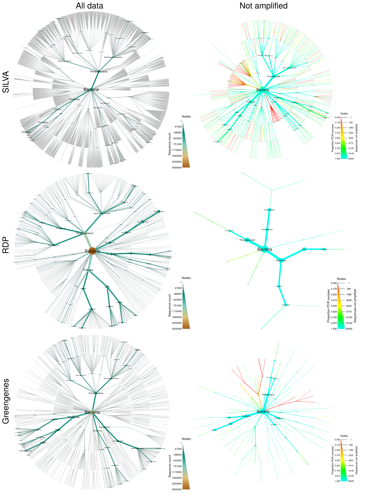

NOTE: This analysis requires at least 10Gb of RAM to run.
library(rmarkdown)
render(input = "publication--01--silva.Rmd")
render(input = "publication--02--rdp.Rmd")
render(input = "publication--03--greengenes.Rmd")load(file.path(output_folder, "silva_data.RData"))
load(file.path(output_folder, "rdp_data.RData"))
load(file.path(output_folder, "greengenes_data.RData"))library(gridExtra)
library(grid)
library(metacoder)
combo_plot <- grid.arrange(ncol = 2, nrow = 3,
top = "All data Not amplified ",
left = "Greengenes RDP SILVA",
silva_plot_all, silva_plot_pcr_fail,
rdp_plot_all, rdp_plot_pcr_fail,
greengenes_plot_all, greengenes_plot_pcr_fail)
ggplot2::ggsave(file.path(output_folder, "figure_2--16s_database_comparison.pdf"),
combo_plot, width = 7.5, height = 10)